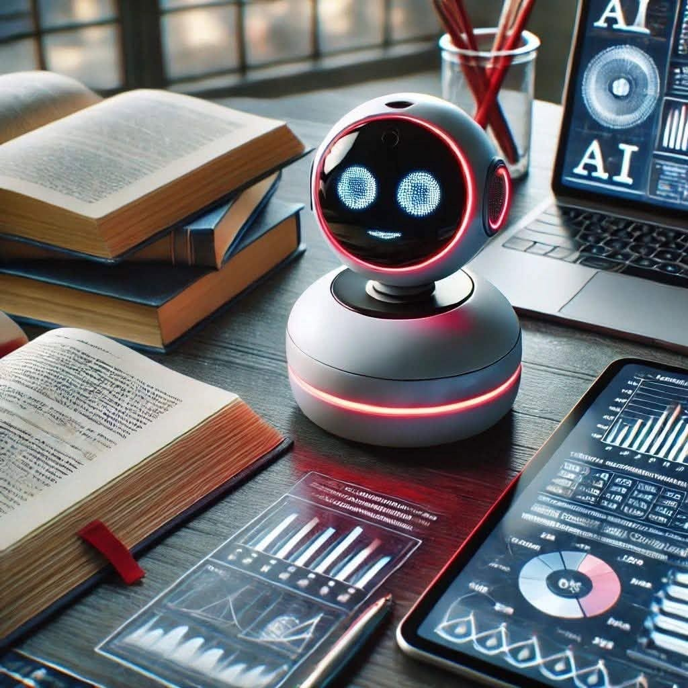
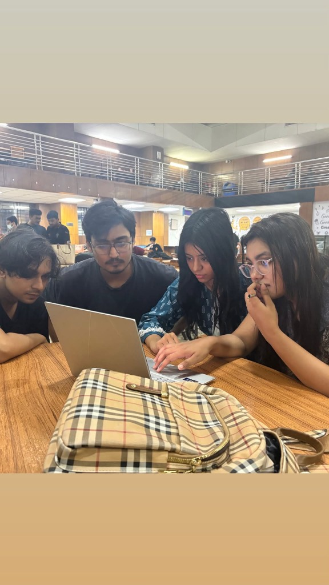
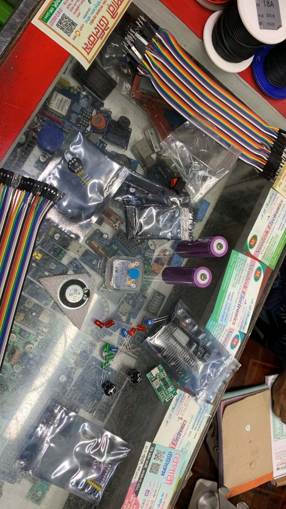
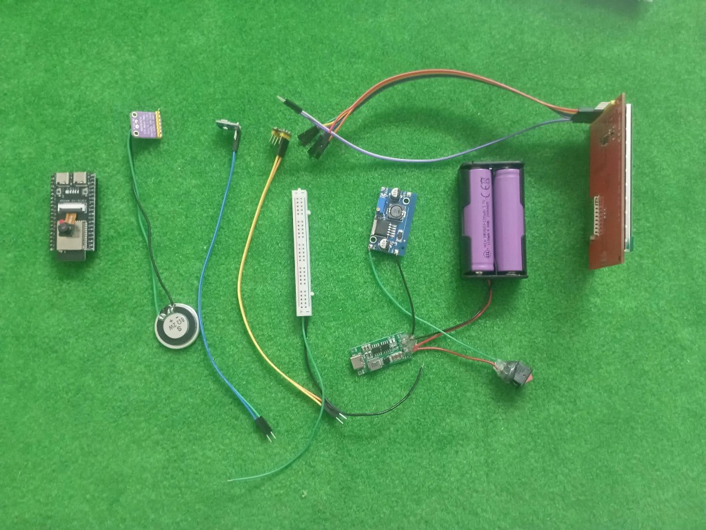
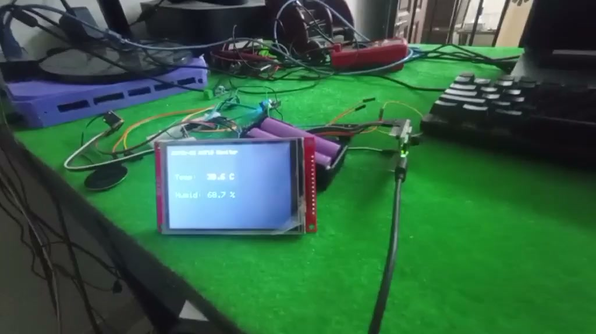
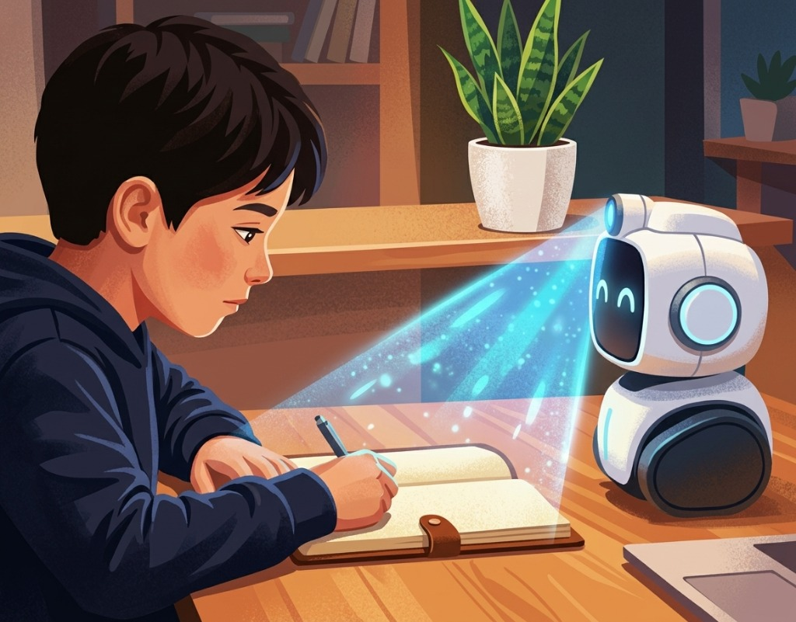
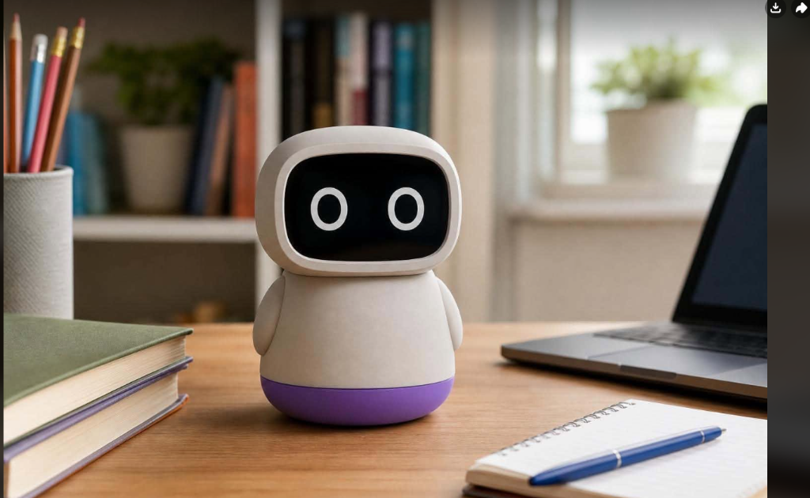

PROJECT TIMELINE
Explore week-by-week engineering milestones with interactive frosted sprint cards, telemetry cinema modals, and verified laboratory documentation.

Project Selection & Specification Initiation
During the inaugural sprint of the robotics project, the engineering unit reviewed candidate initiatives across Human-Robot Interaction (HRI) and computer vision assistive systems. Following comprehensive problem formulation, Project FocusBot was chosen as our official robotics capstone initiative.

Component Architecture & Squad Procurement
Detailed architectural breakdown and subsystem selection for the companion robot, formalizing the bill of materials, mechanical kinematics, power distribution, and component acquisition roadmap.

Hardware Procurement & 3D Body Design
Unboxing the dual-core ESP32-S3 microcontroller, procurement of environment comfort sensing parts, and drafting the modular 3D printable chassis CAD breakdown.

Squad Prototype Assembly & Subsystem Verification
Wired the ESP32-S3 WROOM development board, 3.5" TFT SPI display, MAX98357A I2S audio amplifier, speaker, and sensor breakouts into a unified test bench.

Assembly & Featureset 1 (Environment Comfort Sensing)
Live video demonstration of temperature and humidity telemetry rendered on the 3.5" TFT screen, sensor calibration, thermal equilibrium benchmarking, and edge-to-display loop verification.

Computer Vision, Face Tracking & Attention Classification
Real-time OpenCV and ESP32-S3 camera facial tracking, gaze alignment, study fatigue classification, and multimodal companion interaction verification.

Final AD
Official capstone launch advertisement and final commercial demonstration showcasing FocusBot's integrated physical form factor, real-time edge intelligence, and ambient desktop presence.